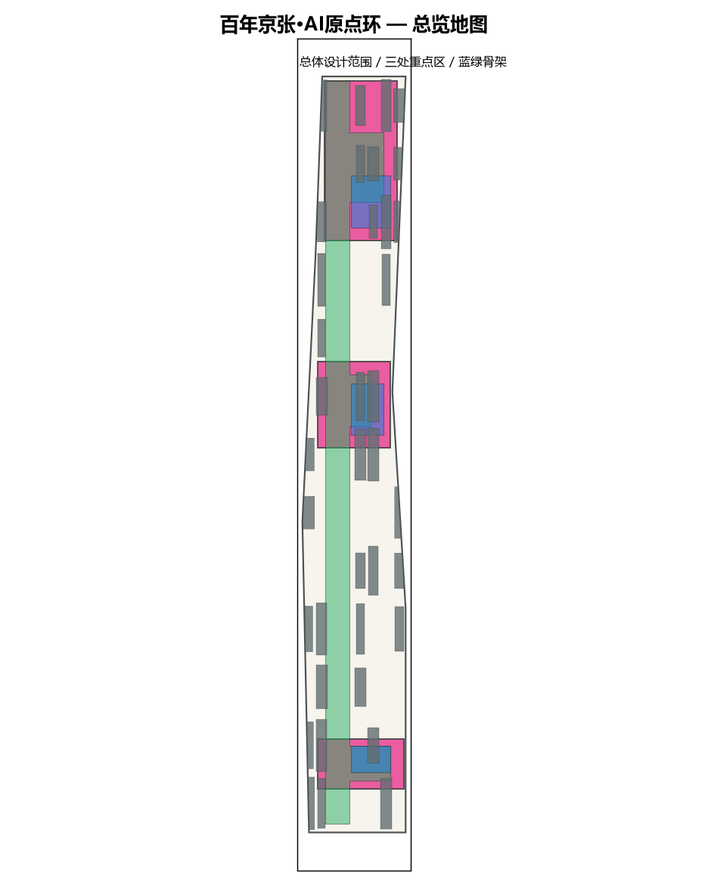
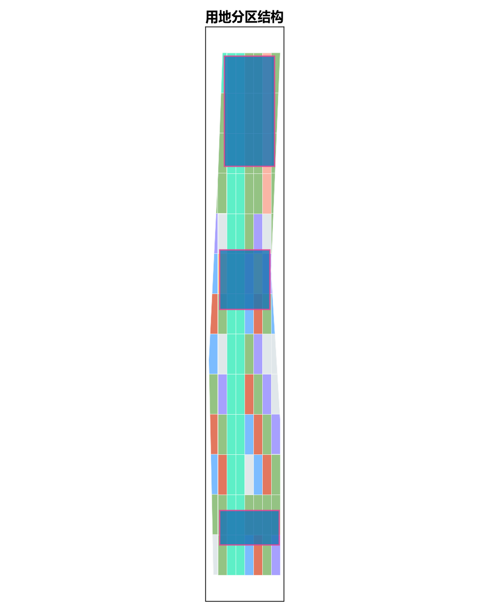
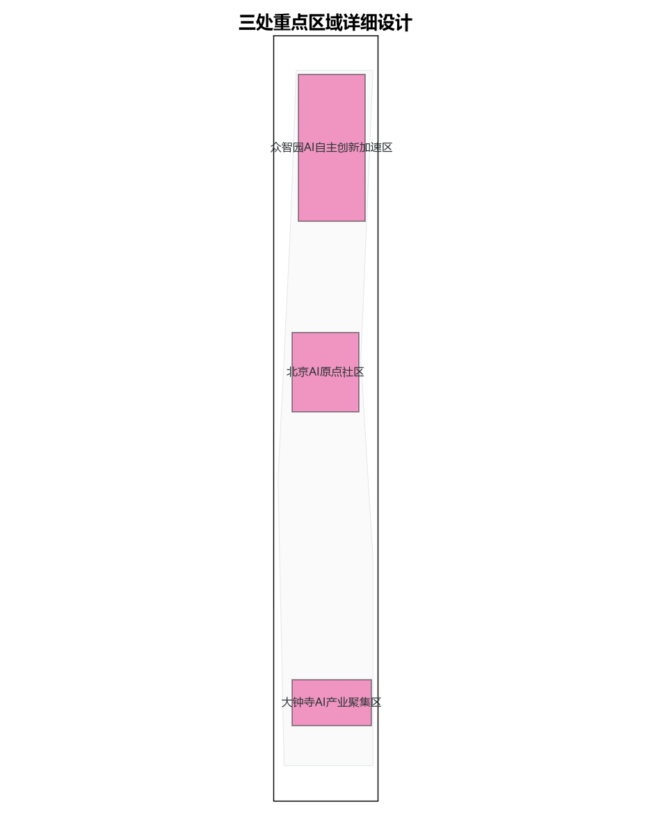
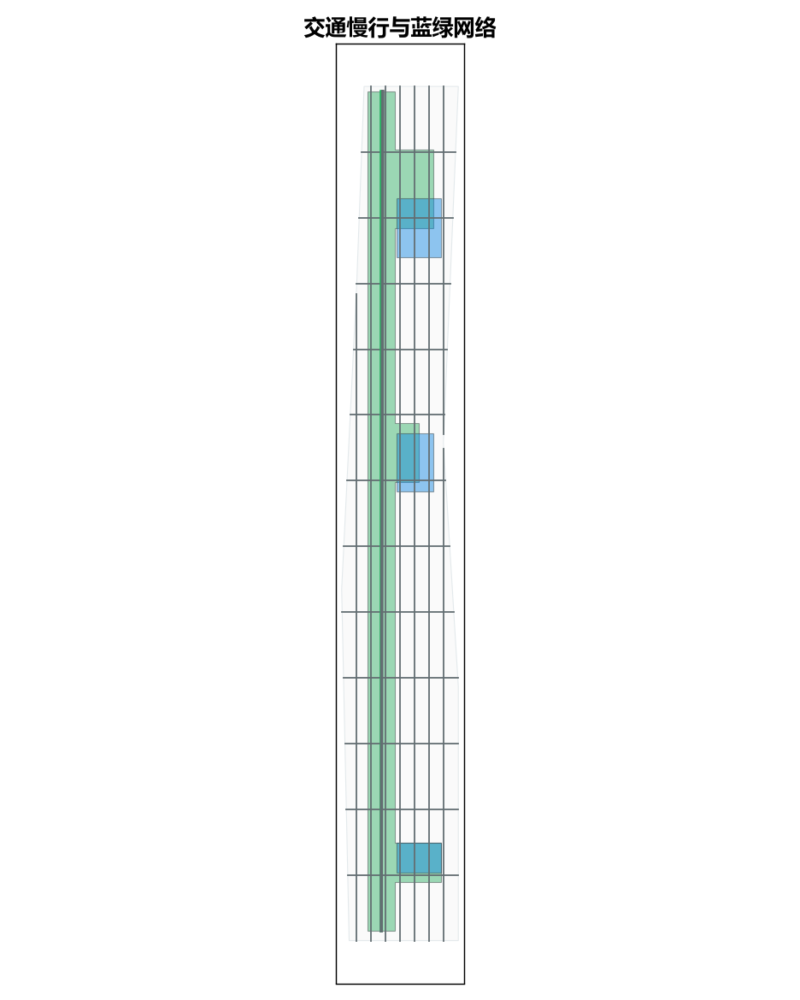

总览地图


三层范围
方案对应征集公告的三层范围：统筹研究范围（约43.6km²）作背景研判，总体设计范围（约11.4km²）承载控规深度城市设计，重点详细设计范围（约3.68km²）聚焦三处重点片区。三层范围逐级深化、空间从属自洽。
重点区域


用地分区
用地以科研(0802)、商业服务业(05)、公共管理与公共服务(08)、公园绿地(1401)为主，并预留留白用地(16)；分区按临时边界无缝覆盖总体设计范围。
交通慢行
构建“轨道接驳—次干路—支路—绿道慢行”分级网络，沿百年京张铁路文脉形成贯通南北的蓝绿慢行脊。
蓝绿公共空间
中央绿脊 + 三处重点区公园/广场，形成连续可步行、可感知的蓝绿与公共空间体系。
建筑
建筑基底以AI研发、实验室、孵化器、办公、混合功能、人才公寓为主，集中在科研与商业分区内。
更新项目
分期更新项目围绕三处重点区与蓝绿脊展开，近期优先启动北京AI原点社区与中央绿脊示范段。
AI 场景
部署AI+科研、AI+出行、AI+治理、AI+低碳等场景节点，形成可运营的AI创新生态。
核心指标
总体设计范围面积 (site_area_sqm)
11412825 m²
绿地率 (green_ratio)
32.8%
公共空间占比 (public_space_ratio)
7.0%
任务覆盖
本方案覆盖征集公告 1.3/1.4/1.5 全部任务与面向智能体的六项 agent 任务（agent.1–agent.6），详见合规矩阵。
自检状态
| 检查项 | 结果 |
|---|---|
| 确定性校验 | 通过 |
| 空间复核 | 通过 |
| 视觉打包 | 通过 |
| 专业证据 | 通过 |
来源
依据：征集公告、面向智能体任务书、城市设计管理办法、控规编制审批办法、国土空间用地分类指南；边界采用临时 polygon（PROVISIONAL-BOUNDARIES）。
假设
所有几何与面积均基于临时粗略边界复算；official redline、控规指标、文保控制线、市政管线等以官方/清权资料为准。